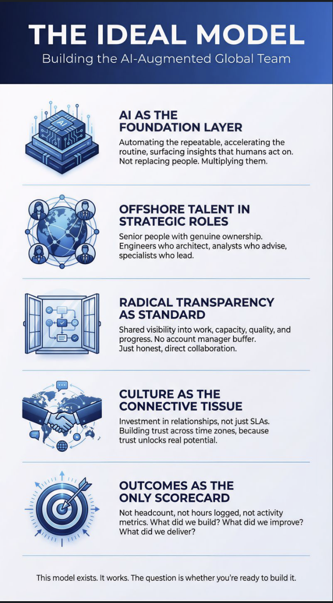
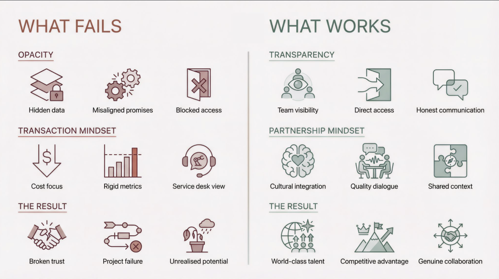

Company research · 27 Sep 2026
Delta Technology and Management Services, now Enhansd: a role to be created
A friend has referred him into a Hyderabad information-technology (IT) staffing and outsourcing company that is renaming itself Enhansd in 2026. There is no job description. The role will be created for him, and the interview will be with Kim Batcheler, who is based in the United Kingdom (UK) and calls himself the company's chief executive officer (CEO). This page is what could be established from outside on 27 September 2026, with register facts, self-claims and our own inferences kept visibly apart.
How to read this page. Every finding carries a label, so that what the company says about itself is never mixed with what someone else recorded.
- Register An official record: the company register kept by India's Ministry of Corporate Affairs (MCA), read through websites that copy it; the UK's Companies House; a United States (US) state register; or a filing with the US Securities and Exchange Commission (SEC).
- Independent Another source the company does not control: a regulator, a court database, a web archive, a job posting's concrete details, or employee reviews.
- Checked by us Checked directly by the main research session on 27 September 2026.
- Self-claim What Delta, Enhansd or Kim say about themselves: their websites, LinkedIn, and member profiles they wrote.
- Inference Our own reading of the evidence. Useful, but not a fact.
One more caution runs through the page. Several findings reached the researchers only as search-engine snippets of pages that could not be opened, or through data brokers. Both are explained in the glossary, are marked where they appear, and never carry a finding alone. Every source was accessed on 27 September 2026.
1. First, the vocabulary
He has not worked inside an IT staffing company, and the company records on this page come from the registers of two countries. Each entry explains what the thing is and why it matters for this seat, not only what the letters stand for.
How a staffing and outsourcing business works
- IT staffing and staff augmentation
- An IT staffing company supplies engineers to other companies. In staff augmentation, the supplier (here, Delta) employs the engineers, but they join the client's own team and take daily direction from the client's managers. The client is billed per person, per month or per hour. In this model a job title describes a grade for billing, not a scope of authority. Delta's own "What We Do" page is mostly this kind of work, and says it also staffs non-IT roles (What We Do, search-index text).
- Billable resource, and the bench
- A billable resource is an employee whose time is being charged to a client right now. People between client placements are on the bench: employed, but not billable. When a placement ends, the person has to be placed again. That is why job security is a common worry at staffing firms, and it is the most repeated complaint in Delta's reviews (section 7).
- Onshore and offshore
- Onshore work is done in the client's own country; for a UK client, in the UK. Offshore work is done in another, usually lower-cost country, here India, often during the client's working hours. Kim's posts argue that this line should stop mattering. He pictures "a product architect in London, a senior engineer in Hyderabad, and a data specialist in Nairobi" working as one team (his first post).
- Dedicated team
- A group of the supplier's people who work only for one client, usually from the supplier's own office and often on the client's hours. It is also called an offshore development centre. Kim lists "dedicated resources" first among the services he oversees (his LinkedIn, screenshot 3).
- "Private Label" (Delta's own term)
- In shops, a private-label product is made by one company and sold under another company's brand, like a supermarket's own-brand goods. Delta uses the words to mean that its engineers fit inside a client's team so closely, following the client's culture and standards, that "the line between outsourced and in-house disappears entirely" (Kim's LinkedIn, screenshot 3). An older text in his profile, which Delta's IndiaMART listing also carries, says "we actually become you" (screenshot 4; Delta on IndiaMART, an Indian business directory). In practice, the public evidence shows Delta engineers working on-site in Delta's Hyderabad office on a US client's hours (a Delta job posting). Whether a client also presents Delta's people to its own customers as its own staff is not shown anywhere.
- "Virtual Corridor" (Delta's own term)
- Delta's name for round-the-clock ("24/7") support across time zones, both at the client's site and from Delta's own office: "time zones won't be a problem because we support clients globally 24/7 both on and off-site whenever needed" (IndiaMART; a second IndiaMART listing shows it as a service). In practice it means Indian shifts arranged to overlap the client's working day. The "™" sign Kim puts after it only claims the words as a brand. It does not mean the trade mark is registered, and no registration was found in India (section 6).
- Service-level agreement (SLA)
- A contract promise about how well a service will run, for example how quickly a fault is answered. Kim uses "SLA scorecards" as his example of a client relationship reduced to numbers.
- Labour arbitrage
- Moving work to a country where it can be done more cheaply, and keeping the saving. Kim uses the phrase for old-style offshoring, which he says became "a race to the bottom on price" (his third post).
- Masterbrand
- One parent brand above several related businesses, each carrying the parent's name, as with Enhansd Tech, Enhansd Studio and Enhansd Apps. Enhansd's LinkedIn page calls itself "a masterbrand and ecosystem" (Enhansd on LinkedIn). A masterbrand can be launched before the businesses under it are running, which is why this page keeps asking which arm the role belongs to.
Company registers and legal forms
- Private limited company (Pvt. Ltd.)
- The Indian form of a private company. Its shares cannot be offered to the public, and its owners' liability is limited to their shares. "Private Limited", "Pvt. Ltd." and "PVT. LTD." all mean the same thing. The UK form ends in "Limited" or "Ltd".
- Ministry of Corporate Affairs (MCA)
- The Indian government ministry that keeps the official register of companies: directors, yearly filings and registered loans. Most people read MCA data through websites that copy it, such as Tofler, Falcon eBiz, InstaFinancials, IndiaFilings and Tracxn. These copies can lag behind the register, and some details sit behind paywalls.
- Corporate Identification Number (CIN)
- The unique number the MCA gives each company. Delta's is
U72200TG2006PTC049878, which reads: U = unlisted; 72200 = software consultancy and supply; TG = Telangana; 2006 = year of registration; PTC = private limited company; 049878 = registration number. - Director Identification Number (DIN)
- The number every person must hold before they can be a director of an Indian company. If no DIN can be found for someone, there is no sign that they have ever been a statutory director in India, although a search can miss things.
- Registrar of Companies (ROC) and annual general meeting (AGM)
- The ROC is the regional office that holds a company's filings; Delta is registered with ROC Hyderabad. The date of a company's last AGM shows how up to date its yearly filings are.
- Goods and Services Tax (GST) registration
- India's tax registration for businesses that supply goods or services. The GST number starts with the state code (36 is Telangana). A GST registration dated 1 July 2017, the day GST began in India, marks a move from the older tax system, not the start of the business. Delta's record also shows it as an export unit under India's software-export schemes: EOU (Export-Oriented Unit), STP (Software Technology Park) and EHTP (Electronic Hardware Technology Park).
- Companies House
- The UK's official company register. Anyone can read it free online. Companies must file the data by law, so it is an independent record, not marketing. It lists the appointments each director holds or has held, which is how Kim's record in section 4 was built.
- Standard Industrial Classification (SIC) code
- A number a UK company chooses to describe its business; for example, 86220 means "specialist medical practice activities". The company picks it, but it sits on the official record.
- Person with significant control (PSC)
- The UK register of anyone who owns or controls more than 25% of a company. If four holders each own exactly 25%, nobody crosses the line, and the company reports "no registrable person".
- A statutory director versus the job title "Director"
- A statutory director is formally registered on the company register (in India, with a DIN). They carry legal duties and appear in public filings. The word "Director", or "CEO", on a LinkedIn profile can also be a job title inside a company, with no board seat. Both are normal, and they are different things. Delta's register lists two statutory directors, and Kim is not one of them on any list the researchers could read (section 4). That is a question to ask politely, not a finding against him.
Company filings, in plain words
- Members' voluntary liquidation (MVL)
- A solvent company closing itself down in an orderly way. The directors must first swear a "declaration of solvency" that all debts can be paid. It is not an insolvency. The 2009 UK "Delta" company that Kim sat on was closed this way, after he had left.
- Strike-off
- Closing a UK company by removing it from the register. A voluntary strike-off is asked for by the directors. A compulsory strike-off is done by Companies House, usually because the company stopped filing. Both are administrative, not findings of wrongdoing.
- Dormant company
- A company that did not trade at all during the year and files short "dormant" accounts. Common for a company set up for a plan that has not started yet. Kim's Opus Labs has filed dormant accounts every year.
- Micro-entity accounts
- The shortest form of UK annual accounts, allowed only for the smallest companies. Filing them tells you the company is very small.
- Charge and debenture
- A charge is a loan registered against a company's assets; it shows who lends to a company. A debenture is the document that gives a lender that security over a company's assets, the way a mortgage secures a house. It is common when an investor also lends to a young company.
Industry bodies and certificates
- Capability Maturity Model Integration (CMMI)
- An outside appraisal of how well defined a company's delivery processes are; "Level 3" means defined, organisation-wide processes. An appraisal is valid for three years, so an appraisal from 2008 or 2012 says nothing about today unless it was renewed. It is a process rating, not a security or quality certificate.
- ISO 9001 and ISO 27001
- Standards from the International Organization for Standardization (ISO): 9001 covers quality management and 27001 covers information-security management. Certificates are issued by outside auditors and expire. A badge on a website is a claim until the certificate is seen.
- NASSCOM
- The National Association of Software and Service Companies, India's main IT industry body. Membership shows that a company joined. The profile text inside a member listing is written by the company itself.
- HYSEA
- The Hyderabad Software Enterprises Association, the IT industry body for Hyderabad. Same caution: the membership is real, the profile text is self-written.
Healthcare words (Kim's other companies)
- Care Quality Commission (CQC)
- The regulator of health and social care in England. It registers providers and inspects them. "We have not inspected this service yet" means no rating, good or bad.
- Regenerative medicine
- Treatments that try to help the body repair damaged tissue, such as joints and tendons, using biological material rather than only surgery or drugs. Stem-cell injections are one example. Kim's clinic investment, Opus Biological, works in this area.
- Platelet-rich plasma (PRP)
- A treatment in which a patient's own blood is spun to concentrate the platelets, which are then injected into an injured joint or tendon to support healing.
- Mesenchymal stem cells
- Adult stem cells that can become bone, cartilage or fat cells. "Allogeneic" means they come from a donor, here umbilical-cord tissue, rather than from the patient.
- MHRA and HTA
- The Medicines and Healthcare products Regulatory Agency (MHRA) regulates medicines and medical devices in the UK. The Human Tissue Authority (HTA) licenses places that store or use human tissue and cells. Opus Biological's website claims certification by both; that could not be checked (section 4).
Words for weighing evidence
- Data broker (for example, RocketReach)
- A website that collects people's job titles, employers and contact details, mostly by copying public profiles such as LinkedIn, and sells access to them. Why its data is weak evidence: it repeats what people say about themselves, it is often out of date or mixes people up, and its pages are usually blocked, so the researchers saw only search-engine snippets of it. A data-broker line is a lead, never a finding.
- Search-engine snippet
- A few lines of a page that a search engine stored earlier. When the page itself cannot be opened, the snippet may be old, cut short, or chosen by the search engine. Deltaintech.com was down all day, so everything its pages say reaches this page this way.
- The Wayback Machine
- The Internet Archive's public archive of old web pages, at web.archive.org. Each saved copy, called a capture, has a date and a status, so captures show when a page was online and what it said then. The research tools could read capture dates, but not the saved page text.
- HTTP 503, DNS and WHOIS
- HTTP (Hypertext Transfer Protocol) is how browsers fetch web pages. Status 503 means "service unavailable": the server answers but will not serve the page. DNS (the Domain Name System) is the internet's address book; when a name "no longer resolves", its entry has been removed. WHOIS is the public record of when a web domain was registered and until when.
A collision to keep straight: "RAG" in Kim's second post is not the AI technique. He writes of "Dashboards full of green RAG statuses, while the actual project quietly unravels" (his second post). Here RAG means Red/Amber/Green, the traffic-light status used on project reports: green is on track, amber is at risk, red is in trouble. It is not retrieval-augmented generation, the AI method in which a system fetches relevant documents before a language model answers. His point is about status reports that say "all fine" while the project fails.
Four more collisions that pollute searches. "Enhansd" is not "Enhans", a South Korean AI start-up at enhans.ai. "Delta Technology & Management" (this company's name on Glassdoor) is not "Delta Technology Management" at deltatechmgmt.com, a US firm. "Kim Batchelor", spelled with an "o", returns different people on the UK register (Companies House search). And the UK "Delta Technology & Software Services Limited" of 2009 was an Alliance One group company, not the Indian Delta; how the two relate is not established (section 3).
2. The verdict
What it is. Delta Technology and Management Services Private Limited was registered in Hyderabad on 17 April 2006 and is active today (Falcon eBiz). Its business is mainly supplying engineers to overseas clients: its "What We Do" page is mostly staffing, its public job posts are all in Hyderabad, and one says outright that the work runs on a US client's hours (What We Do, search-index text; job posting). Its only registered directors are Narendranath Chebrolu, since 2006, and Sundeep Chebrolu, since 2013, whose wider business group is mainly in tobacco (Tofler). In 2026 it is renaming itself Enhansd, with three arms: Tech, "Your People Partner" (active); Studio, "Your AI Partner" (not active); and Apps, "Your Enterprise Partner" (not active) (enhansd.com, checked by us, 27 Sep 2026).
Is it real? Yes, on register evidence. It is active, its last annual general meeting was held on 30 September 2025, it is registered for GST, three large Indian banks have registered loans against it, and five separate links tie the register entry to deltaintech.com (table below). The old website being down is a fact. The rename is a plausible reason for it, and that part is an inference.
What is only self-claimed. The size ("1,400+ professionals", "1,000+ billable resources", "15+ countries"), the client industries, the certificates, any AI capability, and Kim's titles of "Co-founding Director" and "Chief Executive Officer". Independent headcount estimates cluster around 500.
What is independently confirmed about Kim. The UK register shows him joining a London clinic's board on the same day as a Narendranath Chebrolu in April 2021, and sitting on company boards with a Narendranath Chebrolu and a Sundeep Chebrolu since then (Companies House). That they are Delta's two directors, which would make this a long business partnership with the owning family, is a strong name match, not proof (inference). His UK record shows no disqualification, no insolvency notice and no court case (section 4).
The most likely reason the role is being created (inference). Enhansd's AI arm is not active yet. Delta's public hiring shows no AI, data or architect roles at all. And Kim writes that outsourcing providers are now judged by "the platforms they've built and the AI they've embedded into delivery" (his third post). A principal architect who can build that capability is the missing piece. Whether the job is to launch the AI arm, to build AI into the staffing business, or something else is the first thing the interview has to settle.
This describes the company. It is not a recommendation about whether to take the job; that decision is his.
What is established, and what is not
| Question | Status | Basis |
|---|---|---|
| Is the Indian company real and active? | Yes | CIN U72200TG2006PTC049878, incorporated 17 April 2006, ROC Hyderabad, status Active, on every register copy: Tofler · Falcon eBiz · InstaFinancials · IndiaFilings · Tracxn. |
| Are its yearly filings recent? | Yes | Last AGM 30 September 2025, on accounts to 31 March 2025, per two copies (Falcon eBiz; InstaFinancials). Tofler shows an older date because its copy lags. |
| Is deltaintech.com really this company? | Yes, five links | (1) The legal name matches exactly. (2) The register email is on the deltaintech.com domain (Falcon eBiz). (3) The same Level 9, Hans Tech Park address appears on the register, the GST record, the website's contacts page and the LinkedIn page. (4) The two statutory directors are the chairman and executive director on the website. (5) The GST record carries the same legal name. |
| Is Enhansd the same business? | Yes, in its own words | The enhansd.com footer names it "FORMERLY DELTA TECHNOLOGY AND MANAGEMENT SERVICES PVT. LTD." (enhansd.com, checked by us). Enhansd's LinkedIn page gives Delta's exact Hans Tech Park address and the same 501–1,000 size band. The legal form of the change is unknown: the register copies still show the Delta name. |
| Is Kim tied to the owners? | Strong match, not proof | UK register: Kim and Narendranath Chebrolu joined Opus Biological's board on the same day, 13 April 2021; Narendranath has sat on the board of Opus Labs, which Kim founded, since February 2022; Sundeep Chebrolu sat on Opus Biological from February 2024 to February 2026 (Narendranath's appointments · Sundeep's appointments). |
| Is Kim a statutory director of Delta? | Not on any list read | The current board is the two Chebrolus (Falcon eBiz; Tofler). He is also absent from an older list that includes a 2019 appointee (IndiaFilings), and no DIN was found for him. The full history before about 2019 is behind a paywall. A question to ask politely, not a finding. |
| Is the "1,400+ professionals" claim right? | Contradicted | Tracxn counts 495 employees on 31 October 2024 (Tracxn); 548 LinkedIn members list the company (LinkedIn); Built In shows 523 (Built In). All are estimates, and all sit near a third of the claim. |
| Any court cases, disqualification or insolvency? | None found | Delta: zero results on Indian Kanoon, a court-judgment database (search). Kim: no UK disqualification, no Gazette insolvency notice, no court judgment (section 4). A search-negative, not a clearance. |
| Is there AI capability today? | No public evidence | No AI, data or architect role in any public Delta posting (Cutshort; section 6). The "AI R&D arm" (research and development) on the new Tech site is a self-claim (section 3). |
| Why is the old website down? | Unknown | deltaintech.com returns HTTP 503 on http and https (checked by us). The last good archive capture is 14 June 2026 (Wayback Machine). The rename is a plausible reason; that is an inference. |
| What is the role? | Unknown | Nothing public describes it. Only the interview can. |
3. How Delta became Enhansd
Three threads meet in this company: the Chebrolu family's tobacco business, an IT venture inside the Alliance One tobacco group where Kim worked, and a 2026 rename towards AI. Facts are labelled as facts and inferences as inferences.
The Chebrolu family, and a name older than the IT company
Inference The IT company shares its name with the family's older tobacco company (Delta Tobacco, registered in 1992), which suggests a family business name, but nobody has said so. Register Delta Tobacco Company Private Limited was incorporated on 3 January 1992 in Guntur, Andhra Pradesh, with Narendranath Chebrolu as managing director from that day (Tofler). He has been a director of Alliance One Industries India Private Limited, a tobacco-leaf company, since it was incorporated on 17 August 1994; Sundeep Chebrolu is also on that board, and its registered office is the same as Delta's: Level 9, Hans Tech Park, Kondapur, Hyderabad (Tofler; MyCorporateInfo). In January 2025 he became a director of Delta Bio Gas Private Limited, and his director page lists further companies, several of them in the tobacco trade (Tofler, director page).
Self-claim Delta's site credits Narendranath Chebrolu as its founder ("In 2006, founder Narendranath embarked on … founding DeltaTech") and says he has been President of the Indian Tobacco Association and Vice-Chairman of the Indian Tobacco Board (his Delta page, search-index text).
Register Delta Technology and Management Services Private Limited was incorporated on 17 April 2006, with Narendranath Chebrolu as a director from that day (Falcon eBiz; IndiaFilings). Sundeep Chebrolu joined the board on 16 August 2013; Delta's site says he joined the company in 2014, a minor difference (his Delta page, search-index text). Checked by us The domain deltaintech.com was registered on 10 May 2006, 23 days after incorporation, and is registered until 10 May 2027 (WHOIS, checked by us, 27 Sep 2026). The earliest archive capture of the site is from 2 January 2007 (Wayback Machine).
Self-claim Delta's own story is that "a small group of long-time friends who were tech enthusiasts" founded it (About Us, search-index text), and that within "a very short span of time" its reach extended to Brazil, Uganda, Zambia, Argentina, Indonesia, the UK and the US, through a first project on enterprise resource planning (ERP), the core back-office software that runs a company's finance, stock and orders (HYSEA profile; NASSCOM listing, snippet). The HYSEA profile also lists "Agri-Farm Management Systems" among its services.
Inference Those early countries, the agri-farm product and the founder's seat on Alliance One's Indian board all point to a tobacco or agribusiness anchor client in Delta's early years. No public source names any Delta client, so this is a reading of the pattern, not a fact.
The Alliance One connection
Independent Alliance One International was formed in May 2005 by merging two leaf-tobacco merchants, DIMON and Standard Commercial, and was renamed Pyxus International in 2018 (Wikipedia; company overview, snippet). A leaf-tobacco merchant buys, processes and sells raw tobacco to cigarette makers.
Register In 2009 and 2010 that tobacco group had its own IT venture called "Delta". Delta Technology & Software Services Limited was incorporated in the UK on 30 April 2009, and Kim Batcheler was a director from that first day until 13 May 2010. Its other directors and its secretary were officers of Alliance One's UK companies (Companies House, officers; Alliance One Tobacco Limited, officers). Its audited accounts to 31 March 2010 say it "provides marketing services to Delta Technology & Software LLC another company within the Alliance One group". They name that company, a North Carolina limited liability company (LLC), as its immediate parent, and Alliance One International Inc as its ultimate parent, then listed on the New York Stock Exchange (NYSE) (accounts to 31 March 2010). It was closed by a solvent members' voluntary liquidation between October 2011 and December 2012, after Kim had left (filing history).
Register In June 2010, Alliance One told its lenders about this venture. An amendment to its credit agreement, dated 9 June 2010 and filed with the SEC, defines "Delta Technology" as Delta Technology and Software, LLC, and "Delta Limited" as the UK company above. It allowed Delta Technology to issue equity "to officers, employees or directors of Delta Technology, members of the industry appointed to an advisory board … and/or third party investors", and it capped Alliance One's own cash investment in the two Delta companies (SEC, Exhibit 10.23). In plain words: in 2009 and 2010, "Delta Technology" was an IT venture inside a tobacco group, and it was being opened up to managers and outside owners.
Inference How this Alliance One "Delta" relates to the Indian Delta is not established by any record found. The Indian company is older (April 2006), and no register links the two. But the timing lines up. Kim resigned from the UK Delta board in May 2010, the month after his LinkedIn says he started at the Indian Delta (April 2010), and the lenders' amendment opening the venture to outside owners is dated June 2010. Narendranath Chebrolu has sat on Alliance One's Indian board since 1994, and Kim was, by a data broker's line, Alliance One's "Global IS Director" (IS is information systems, a company's internal computer systems). The most plausible reading is that they met through Alliance One, and that Kim's "co-founding" describes an early international or client-facing role rather than a founding shareholding. That is a reading of the timeline, not a fact, and it is a gentle question for the interview (question 11).
The 2026 rename: Delta becomes Enhansd
| Evidence | Kind | Source |
|---|---|---|
| The enhansd.com footer reads "ENHANSD [FORMERLY DELTA TECHNOLOGY AND MANAGEMENT SERVICES PVT. LTD.] - 2026". | Checked by us | enhansd.com, in the site's own JavaScript code, 27 Sep 2026 |
| "Our Suite of VERTICALS" shows three arms: ENHANSD TECH, "Your People Partner", marked active and linking to enhansd.tech; ENHANSD STUDIO, "Your AI Partner", marked not active; ENHANSD APPS, "Your Enterprise Partner", marked not active. | Checked by us | enhansd.com |
| The code also contains a "Launching Soon" label. That it shows on the two inactive arms is our inference from how the page code is built, not something seen on screen. | Checked by us Inference | enhansd.com |
| Tagline "FUTURE READY. PEOPLE-FIRST. OPEN TO ALL." and "We engineer intelligence into how organizations think, operate, and perform — combining human judgment with AI-native systems to deliver measurable outcomes at scale." | Self-claim | enhansd.com |
| How the new Tech site describes the three arms. Tech: "Helps enterprises build reliable technology capability by forming stable, long-term teams aligned to shared outcomes." Studio: "Enables organizations to implement AI with low risk, using fast pilots to validate outcomes before larger deployments." Apps: "A suite of apps for resource planning, management & maintenance across businesses and enterprises." | Self-claim | enhansd.tech, read from the site's saved page code, 27 Sep 2026; not in the three research notes |
| Enhansd's LinkedIn page gives Delta's exact address (Hans Tech Park, Whitefields, Kondapur), "IT Services and IT Consulting", the same 501–1,000 employee band as Delta, and 5 followers, so the page is brand new. It calls itself "a masterbrand and ecosystem focused on engineering intelligence into how organizations think, operate, and perform", with specialties including Artificial Intelligence, AI-Native Platforms, Intelligent Automation, Global Delivery and Applied Intelligence. | Independent address match · Self-claim text | Enhansd on LinkedIn |
| Enhansd Tech describes itself as "built on 20 years of proven success", with "100% client retention" and a "5.2% attrition rate", a Hyderabad delivery centre of "800+" engineers, and offices in New York, Dubai and London. | Self-claim | enhansd.tech |
| Enhansd Tech's own history timeline: 2014, "Acquired InfoStep. Expanded to the Middle East."; 2022, "Expanded into AI/ML & IoT. Established AI R&D arm."; 2025, "ISO 27001. Launch of AI-augmented staffing & new verticals." (ML is machine learning; IoT is the Internet of Things, meaning connected devices; R&D is research and development.) | Self-claim | enhansd.tech, read from the saved page code; not in the notes |
| A tool called TalentMetrics sits at talentmetrics.enhansd.com, described as an "AI-driven Assessment Platform". Its page loads a script from Replit, an online app-building service, which suggests it was built there. | Self-claim (snippet) · Inference | TalentMetrics |
| RocketReach lists Kim as "Chief Executive Officer at Enhansd", with Delta among his previous roles. | Data broker, snippet only | RocketReach |
| No company named Enhansd was found on the UK register or on OpenCorporates, a worldwide company-register search. The Indian register was not searched for an Enhansd name. | Register (absence) | Companies House · OpenCorporates |
deltaintech.com returns HTTP 503 on http and https. Its careers. and deltahrms. sub-sites no longer resolve in DNS. The last good capture of the home page is 14 June 2026, and Delta's LinkedIn page was still posting one to two months ago. | Checked by us · Independent | deltaintech.com · Wayback Machine · Delta on LinkedIn |
Inference The rename most likely explains the outage: the old domain still resolves and is registered until 2027, so the domain was not lost; the site was switched off some time after 14 June 2026 while a new brand went live. Enhansd may be a new brand over the same legal company, or a formal rename not yet visible in the register copies, which still show the Delta name. Which legal company would employ him is question 11.
Inference Enhansd Tech's "Acquired InfoStep" fits a register fact. Infostep India Private Limited was an IT company, incorporated on 21 September 2006 and recorded as a subsidiary of an unnamed foreign company, registered at Delta's former Madhapur address, with Narendranath Chebrolu (from 2011) and Sundeep Chebrolu (from 2013) as directors. Its status is now "Amalgamated", but the copy does not say which company it merged into (Tofler; InsiderBiz). A merger into Delta is the likely reading, not a confirmed one.
The timeline in one table
| When | What happened | Kind | Source |
|---|---|---|---|
| 3 Jan 1992 | Delta Tobacco Company incorporated; Narendranath Chebrolu managing director from that day | Register | Tofler |
| 17 Aug 1994 | Alliance One Industries India incorporated; Narendranath a director from that day; it shares Delta's registered office today | Register | Tofler |
| 17 Apr 2006 | Delta Technology and Management Services incorporated in Hyderabad | Register | Falcon eBiz |
| 10 May 2006 | deltaintech.com registered | Checked by us | WHOIS |
| 30 Apr 2009 | UK "Delta Technology & Software Services" formed inside the Alliance One group; Kim a director from day one | Register | Companies House |
| Apr 2010 | Kim's LinkedIn: "Director" at the Indian Delta from April 2010 | Self-claim | screenshot 4 |
| 13 May 2010 | Kim resigns from the UK Delta board | Register | Companies House |
| 9 Jun 2010 | Alliance One's lenders allow its "Delta Technology" venture to take in managers and outside owners | Register | SEC |
| 2011–2012 | The UK Delta company is wound up solvently; dissolved 13 December 2012 | Register | Companies House |
| 2012 | Deltatech USA, Inc., Delta's company in the United States of America (USA), probably formed in Nevada (read from its entity number); Delta claims a CMMI Level 3 appraisal this year | Inference · Self-claim | OpenCorporates · HYSEA |
| 16 Aug 2013 | Sundeep Chebrolu joins Delta's board | Register | Falcon eBiz |
| 2014 | Enhansd Tech says it "Acquired InfoStep"; the register shows Infostep India as "Amalgamated" | Self-claim · Register | enhansd.tech · Tofler |
| 1 Jul 2017 | Delta's GST registration, on GST's first day | Register | GST record |
| 10 Jun 2019 | Aditi Kotireddy Chebrolu appointed a director of Delta; she is absent from the current lists | Register | IndiaFilings |
| Jan 2021 | Kim's LinkedIn: Chief Executive Officer from January 2021 | Self-claim | screenshot 3 |
| 13 Apr 2021 | Kim and Narendranath Chebrolu join Opus Biological's board on the same day | Register | Companies House |
| 2 Feb 2022 | Narendranath Chebrolu joins the board of Opus Labs, the company Kim founded | Register | Companies House |
| about 2022 | Delta website copy: "in the 16 years since its formation", "over 1400+ employees", "over 1000 billable resources" | Self-claim | About Us, snippet |
| 2022 | Enhansd Tech says Delta "Established AI R&D arm" | Self-claim | enhansd.tech |
| 31 Oct 2024 | Tracxn counts 495 employees | Independent (estimate) | Tracxn |
| 13 Nov 2024 | Kim's public deck "AI Agentic Workflows" last updated | Self-claim | Prezi |
| 2024–2025 | New or changed bank charges registered (Kotak Mahindra Bank, Axis Bank) | Register | Tofler |
| 2025 | Enhansd Tech says: "Launch of AI-augmented staffing & new verticals" | Self-claim | enhansd.tech |
| 30 Sep 2025 | Delta's last annual general meeting | Register | Falcon eBiz |
| 31 Mar 2026 | Deltatech USA, Inc. reinstated in Nevada after a lapse | Register | OpenCorporates |
| 2026 | enhansd.com: "ENHANSD [FORMERLY DELTA TECHNOLOGY AND MANAGEMENT SERVICES PVT. LTD.] - 2026" | Checked by us | enhansd.com |
| May–Jul 2026 | Delta's LinkedIn page posts "We're Hiring | Join Our Growing Team!" for several engineering roles | Self-claim | Delta on LinkedIn |
| 14 Jun 2026 | Last good archive capture of the deltaintech.com home page | Independent | Wayback Machine |
| 27 Sep 2026 | deltaintech.com returns HTTP 503; its careers and human-resources sub-sites are gone from DNS | Checked by us | deltaintech.com |


4. Kim Batcheler: professional record
Professional record only. His date of birth, his home and correspondence addresses and his family appear on public registers; they are deliberately not repeated here.
Register Identity. Companies House returns three officer records for "Kim Clive Batcheler". They were matched to him by full name, the same birth month and year (not repeated here), the companies on his LinkedIn profile, and London. Companies House creates a new officer record when a director files a new correspondence address, so one person often has several (officer search). Spelling variants such as "Kim Batchelor" belong to different people.
His UK company appointments
| Company (number) | His role | Status today | What it does | His stake, and links to Delta's owners |
|---|---|---|---|---|
| Cutis Life Limited 14950633 |
Director since 21 June 2023, from incorporation | Active; files micro-entity accounts | Corporate skin-cancer screening led by a consultant dermatologist, sold mainly to employers as workplace wellness (SIC 86220) (cutis.life) | His company Largo holds 25–50%. The other 25–50% is held by Glass Medical Ltd (Companies House), the company of Dr Daniel Glass, the dermatologist who is the other director. In plain words, a roughly equal joint venture (PSC register). |
| Opus Labs Limited 13697636 |
Director since 22 October 2021; he incorporated it | Active; dormant in every year filed (2023–2025) | The planned laboratory arm of Opus Biological: biotechnology research and specialist medical practice (SIC 72110, 86220). It has never traded. | He owned 75% or more until 2 February 2022; since then Opus Biological does. Narendranath Chebrolu has been a director since 2 February 2022. Sir Richard Sykes, a former chairman of GlaxoSmithKline, sat on its board from February 2022 to February 2023; his officer record lists the UK Stem Cell Foundation, DnaNudge and NetScientific, matching that public career (his appointments; Wikipedia). |
| Opus Biological Limited 11197130 |
Director since 13 April 2021 | Active; small-company accounts; about 6 employees on average in the year to 31 March 2025 (accounts) | A London sports and regenerative-medicine clinic: stem-cell treatment, PRP, knee injections, physiotherapy, general practice and more (SIC 86220) (opusbiological.com). Registered with the CQC and not inspected yet (CQC). | 25% through Largo, as one of four equal shareholders (confirmation statement, February 2022), and Largo is a secured lender through a debenture from August 2021 (charge). Narendranath Chebrolu joined the board on the same day as Kim and left in February 2023; Sundeep Chebrolu sat on it from February 2024 to February 2026. Another 25% holder is "Vaanya Holdings Private Limited", a name not found on Indian registers; a similarly named Hyderabad company, Vaanya Industries, has only the two Chebrolus as directors (Tofler). Inference It is probably a Chebrolu vehicle; unproven. |
| Largo Consultancy Limited 10642199 |
Director since 28 February 2017 | Active | A company he owns part of (more than a quarter, up to a half, per its register of people with significant control), first registered as "Batcheler Limited" and renamed a month later; management consultancy (SIC 70229) | The vehicle that holds his stakes in Cutis Life and Opus Biological, and the secured lender to Opus Biological |
| Katch IT Limited 08939833 |
Director from 14 March 2014 until it closed | Dissolved 26 April 2016 by compulsory strike-off; it filed no accounts | A small management consultancy (SIC 70229) | None to Delta |
| Katch Consulting Ltd 07754657 |
Director from 26 August 2011 until it closed | Dissolved 12 March 2013 by voluntary strike-off | Declared no business activity; its directors applied to close it about 15 months after it was formed | None to Delta |
| Delta Technology & Software Services Limited 06893306 |
Director from 30 April 2009 to 13 May 2010 | Dissolved 13 December 2012 after a solvent members' voluntary liquidation | Marketing services for its US sister company inside the Alliance One tobacco group; four staff; audited by Deloitte (SIC 7260, other computer-related activities) | No Chebrolu officers. Its shareholder list sits in filings that could not be opened. |
Sources for the whole table: his three officer records (four current appointments · two past · one past) and each company's own register page, linked in the first column.
Is there a technology link between Delta and his healthcare companies? No evidence of one. Opus Biological's patient portal runs on a third-party platform, ClinicLink, whose publisher (Amberley Innovations Limited) has no Kim, Chebrolu or clinic-founder officers (ClinicLink; App Store listing; Amberley officers). Cutis names no technology supplier (cutis.life). Enhansd Tech lists healthcare as an industry, with badges for the US health-privacy law HIPAA (Health Insurance Portability and Accountability Act) and the health-data standards HL7 (Health Level Seven) and FHIR (Fast Healthcare Interoperability Resources), and one anonymous "Fortune 500 Healthcare Provider" case study (enhansd.tech). Nothing ties that to Opus or Cutis. The link is people and ownership, not technology.
His background: what he says, and what is confirmed
| What he says | Where it comes from | What the independent record shows | Status |
|---|---|---|---|
| Regional IS Director for Europe and Asia at DIMON International Services (1997–2003); Director of Global Product Integrity at DIMON (2003–2005); Global IS Director at Alliance One (2005–2009) | RocketReach (data broker, snippet); The Org, a user-editable site, lists "Alliance One" | A UK company was named "DIMON International Services, Ltd." from 1997 to 2005, matching the employer names and dates (Companies House); he sat on an Alliance One group company's board in 2009–2010 | Partly supported |
| Master of Business Administration (MBA), University of Liverpool, 2006–2009 | His LinkedIn shows the university (screenshot 1); the years come from RocketReach; his Cutis bio says "MBA"; Delta's bio says "post-graduate qualification in Business Administration" | Nothing independent | Unverifiable consistent |
| "Fellow of the esteemed Institute of Directors" (IoD, the UK's professional body for company directors) | Delta's bio of him (snippet; the page returned HTTP 503) | The IoD has no public member directory | Unverifiable |
| "an accidental entrepreneur" who "started up a software development business in India", and a software-as-a-service (SaaS) business in the US | His LinkedIn "About" text, via search snippet (LinkedIn) | The Indian business is real; no US software-as-a-service business was identified | Partly unverifiable |
| Director of Opus Biological since March 2021 | screenshot 2 | Appointed 13 April 2021; 25% holder through Largo; secured lender | Supported the one-month gap is normal |
| Director and "Investor / Owner" of Cutis Life since June 2023 | screenshot 2 | Appointed 21 June 2023; Largo holds 25–50% | Supported |
| "Opus Biological, the UK's first MHRA compliant Mesenchymal Stem Cell clinic" | His bio on cutis.life | The HTA register blocked automated access; no MHRA or GOV.UK page names Opus either way (GOV.UK search); CQC registered, not yet inspected | Unverifiable not false |
| "controlling interests in investments in the United Arab Emirates and in the United States in the technology sectors" | His bio on cutis.life | Nothing public identifies them | Unverifiable |
| "more than two decades" of technology leadership | Delta's bio of him (snippet) | Consistent with the 1997 start above | Self-reported consistent |


How he presents himself
Self-claim His LinkedIn headline is "CEO | Founder | Growth Architect | Tech Visionary", with 500+ connections and a Premium profile (screenshot 1). His Delta entry speaks of "relationships first - then technology" and "a people-first culture" (screenshot 3). Delta's bio of him says he "oversees engagement teams, ensuring seamless client delivery and providing pivotal operational guidance" and is "Based in the UK" (snippet). His one public presentation found is a deck called "AI Agentic Workflows", last updated on 13 November 2024. It defines agentic workflows, lists their parts (data integration, automation, user interactivity and decision-making algorithms), and names robotic process automation (RPA), AI bots, machine-learning models and predictive analytics as the tools (Prezi). No interview, podcast, conference talk or press quote was found.
Inference The Kim note reads him as a commercial, relationship-led founder rather than a hands-on technologist, and suggests that a strong answer leads with business outcomes, then the architecture. That is a reading of his own words, not a fact about him.
Red flags in his public record: none evidenced
| Check | Result | Source |
|---|---|---|
| UK director disqualification | None | disqualified-directors search |
| Bankruptcy or insolvency notices in The Gazette, the UK's official public record | None (0 notices) | full name · short name |
| UK court judgments | None naming him or his companies. One "Mr Batcheler" in a 2006 case about a motorcycle business has no first name and no link to him: a name collision. | Find Case Law |
| Company insolvencies | None. The UK Delta company was a solvent liquidation after he left; the two Katch companies were strike-offs. | Companies House |
| Regulator action on Opus Biological | None shown. CQC-registered, not yet inspected; GOV.UK search returns nothing. | CQC · GOV.UK |
Neutral facts, not flags. Katch IT was struck off compulsorily in 2016 after filing no accounts, which is the usual way a small consultancy that stopped trading gets closed. Opus Biological's licensing claims could not be checked, and unverified is not the same as false. His titles and dates differ a little across his own materials (see section 6); the most likely reasons are that "Director" and "CEO" are job titles rather than board seats, and that more than one "Delta" company existed. Worth one polite question, not a flag.
5. Kim's three posts, in plain words
He pasted three of Kim's LinkedIn posts on 27 September 2026; the copies carry no dates. They are thought-leadership writing: they say what Kim argues for, not what Delta has delivered. Read together they make one argument, and it bears directly on why a role would be created now.
Post 1: "The Ideal Model", five pillars
His picture of "what great looks like" is a delivery team with "no meaningful distinction between 'onshore' and 'offshore'", where AI agents "handle the scaffolding" and every person focuses on work that needs "judgment, creativity, and trust". His summary: "This isn't a cost model. It's a capability model." (post 1)
| Pillar | His words | What it means in practice |
|---|---|---|
| 1. AI as the foundation layer | "automating the repeatable, accelerating the routine, surfacing insights that humans then act on. Not replacing people. Multiplying them." | Use AI for routine work, which he names as "the documentation, the testing cycles, the data processing, the pattern recognition across millions of records", so that people spend their time on decisions. |
| 2. Offshore talent in strategic roles | "Senior people with genuine ownership, not just task queues. Engineers who architect, analysts who advise, specialists who lead." | Senior engineers in India should own real decisions, not only carry out tasks set elsewhere. |
| 3. Radical transparency as standard | "shared visibility into work, capacity, quality, and progress. No account manager buffer. No filtered updates." | Clients see the real work and talk to the real team directly. |
| 4. Culture as the connective tissue | "investment in relationships, not just SLAs. Time spent building trust across time zones" | Build trust across locations on purpose, not only through contract terms. |
| 5. Outcomes as the only scorecard | "not headcount, not hours logged, not activity metrics. What did we build? What did we improve? What did we deliver?" | Judge the team by results, not by effort or size. |
Post 2: opacity against transparency
His diagnosis of failed offshoring is one word, "opacity": "Senior talent showcased in the pitch — junior talent deployed in the delivery", "CVs that look impressive on paper, work that tells a different story" (a CV, curriculum vitae, is a résumé), and "Dashboards full of green RAG statuses, while the actual project quietly unravels" (Red/Amber/Green status; see the glossary). His cure is transparency "about who is actually doing the work", about "capacity, pressure points, and where things are slipping", and "about what AI is augmenting — and what it isn't". He asks clients to demand five things: meet the actual team before signing anything; direct access, "not just a single account manager layer"; a clear answer on "how attrition is handled and who owns continuity"; quality as "a two-way conversation, not a quarterly review"; and treating the offshore team "as an extension of your culture, not a service desk" (post 2). His graphic sets "What fails" (opacity and a transaction mindset: hidden data, cost focus, a service-desk view) against "What works" (transparency and a partnership mindset: team visibility, direct access, shared context).
Post 3: "AI-augmented resourcing"
He tells a three-step story. First, "Traditional offshoring was a labour arbitrage play". Then "the AI-first wave": vendors "promising 40–70% productivity gains" and top executives, the "C-suites", cutting staff on that promise, when many of those gains "require significant operating model redesign that organisations simply aren't ready for". Now, he says, "We are entering the era of AI-augmented resourcing": AI handles "the volume, the repetition, and the pattern recognition", while skilled people "in London, in Bangalore, in Dubai" bring "the judgment, the context, and the creativity that no model can replicate" (post 3).
He quotes KPMG, a global accounting and consulting firm whose letters come from its founders' names (Klynveld, Peat, Marwick, Goerdeler): "KPMG put it well recently: what differentiates outsourcing providers today isn't the size of their offshore teams — it's the platforms they've built and the AI they've embedded into delivery." He goes further: the winners will be leaders who treat "AI as infrastructure and talent as the strategic layer on top".
His post links to KPMG's "Rewriting the Outsourcing Playbook" and to "The Impact of AI on Offshoring and Outsourcing", credited to the law firm Morgan Lewis and the Boston Consulting Group. Neither was opened, so the KPMG wording is Kim's paraphrase, not a checked quotation.

Post 1 graphic · as pasted by him

Post 2 graphic · as pasted by him
What this implies for a role created now
Every point here is our inference from his words and the record above.
- He is describing the seat in his own words. Pillar 2 asks for "Engineers who architect" with "genuine ownership", based offshore. A principal architect in Hyderabad is that person, and the role may also serve as proof of his argument to clients.
- The capability he says clients now buy is the one Delta's public record lacks. "The platforms they've built and the AI they've embedded into delivery": Delta's public hiring shows no AI, data or architect roles, and the old site's only AI item is a "Delta Chatbot Enterprise Virtual Assistant" page (snippet). The seat most likely exists to close that gap, through Studio's AI pilots, AI inside the staffing delivery, or both (section 8).
- He names concrete targets for AI: documentation, testing cycles, data processing and pattern recognition across large record sets. These are the likeliest first things to build.
- He will probably reward measured claims. "Transparency about what AI is augmenting — and what it isn't" means specific, honest examples fit his language better than broad promises.
- The architect may face clients directly. "Meet the actual team before you sign anything" and "direct access" suggest a senior engineer who is visible to clients, before and during delivery. Studio's "fast pilots to validate outcomes" point the same way. Question 2 settles how much of the week that would be.
- His target market reads as the UK. Post 3 closes "For UK businesses navigating rising costs, skills shortages, and pressure to innovate at speed". That suggests daily overlap with UK hours (question 6).
- The technical design is likely to be the architect's to own. His public AI writing stays at the level of business outcomes, and his 2024 deck names tool families (RPA, bots, machine-learning models, predictive analytics) rather than a platform or a stack.
6. Claims against evidence
Each row sets a self-claim against what someone other than the company recorded. "Unverifiable" means nothing independent could be found either way. It is not the same as false.
| Self-claim | Independent evidence | Verdict |
|---|---|---|
| Kim's claims about Delta (his LinkedIn: screenshot 3, screenshot 4) | ||
| "Co-founding Director of a global technology services company" | Delta was incorporated on 17 April 2006 with Narendranath Chebrolu as director, and Delta's site credits him as founder. Kim's own LinkedIn start date is April 2010. His Cutis bio says he "co-founded Delta Technology in 2007" (cutis.life); Delta's bio says "From the inception of DeltaTech" (snippet). | Unverifiable, in tension with his own dates |
| "Director" since April 2010 | Not on the current board or on an older list that includes a 2019 appointee; no DIN found; the history before about 2019 is paywalled (Falcon eBiz; IndiaFilings). | Unverifiable likely a job title (inference) |
| "Chief Executive Officer" since January 2021 | India's register does not record CEO titles. Third-party listings conflict: The Org titles his page "CEO" but its text says "Director" (The Org); RocketReach says "CEO at Enhansd"; a Crunchbase search-result title (the page itself was blocked, so there is no citable page) calls Narendranath "Founder and Chief Executive Officer", and IndiaMART lists "CEO/Proprietor: N Nath" (IndiaMART). | Unverifiable |
| "a powerhouse of 1,400+ professionals" | Tracxn 495 (31 October 2024); LinkedIn 548 members; Built In 523; The Org 201–500 (Tracxn; LinkedIn; Built In; The Org). Caveat: engineers inside client teams may list the client as their employer, which would make LinkedIn-based counts too low. | Contradicted by every independent count |
| "1,000+ billable resources" | No independent figure. With about 500 staff on independent counts, most billable people would have to be non-employees. | Unverifiable, in tension |
| "15+ countries" | Legal entities found only in India and the US. Delta's own lists name 11 countries in total: India, the US, the United Arab Emirates (UAE) and Australia on its site; the UK and Singapore on Internshala; Brazil, Uganda, Zambia, Argentina and Indonesia on HYSEA (contacts page, snippet; Internshala; HYSEA). | Unverifiable |
| "50+ technologies" | Hiring posts span several older and newer stacks (see the hiring row below): breadth, but not a count. | Unverifiable a marketing count |
| Clients in "financial services, waste management, and enterprise technology" | No named client in any public source. Delta's other texts say "finance, agribusiness and government" (HYSEA) or "banking, manufacturing, food & beverage, logistics, technology and energy" (LinkedIn). Waste management appears nowhere else. | Unverifiable |
| "Our Private Label model" | A Delta posting is on-site in Hyderabad, from 12:30 in the afternoon to 9:30 at night India Standard Time (IST), for a "US-based client" (Jobaaj); a review snippet describes a senior consultant as a "current contractor" who praised client-focused work (Glassdoor, snippet). | Supported as dedicated-team staffing; "Your customers won't know the difference" is unverifiable |
| "Virtual Corridor™" 24/7 support | No "virtual corridor" trade mark in a mirror of India's trade-mark register (QuickCompany); UK and US registers could not be searched. Shifts set to US hours are independent evidence of the practice. | Trade mark: none found Practice: partly supported |
| "Lead client acquisition and relationship management across EMEA, the US, and Asia Pacific" (EMEA is Europe, the Middle East and Africa) | Nothing public | Unverifiable |
| The company's claims (old site, member profiles, the new Enhansd sites) | ||
| Offices: Hyderabad, Mumbai, Dubai and Dallas (old site, snippet); India, the US, the UK, Sydney, Singapore and the UAE (Internshala); Hyderabad, New York, Dubai and London (Enhansd Tech) | Hyderabad: register, GST record and LinkedIn agree. US: Deltatech USA, Inc. is registered in Nevada and Texas, and the Nevada record shows a lapse reinstated on 31 March 2026 (Nevada; Texas). Mumbai, Dubai, the UK, Australia and Singapore: no register record found. | Hyderabad and US supported the rest unverifiable |
| CMMI Level 3 "in 2012" (old site, HYSEA, NASSCOM) against "2008: Achieved ISO 9001 & CMMI L3 certifications" and badges for "CMMI ML3", "ISO 9001:2015" and "ISO 27001:2023" (enhansd.tech, read from the saved page code). "L3" and "ML3" both mean Level 3. | The CMMI results register was not checked; no certificate was seen. Appraisals last three years. | Unverifiable; the two self-claims disagree on the year |
| "Established AI R&D arm" (2022) and "Launch of AI-augmented staffing" (2025) (enhansd.tech) | No AI, data or architect role in any public posting. The highest title seen is "Lead Fullstack Consultant" (1 July 2026; LinkedIn Jobs 4431907942, expired). Experience asked for tops out around 6–13 years, with one posting at 6–20 (Cutshort; LinkedIn Jobs). | Unverifiable no independent sign of an AI team |
| Hiring for "50+ technologies" | Posts from August 2025 to July 2026, all in Hyderabad: AS/400 (Application System/400, an older business computer from IBM, International Business Machines), PowerBuilder (a 1990s business-app tool), ABAP (Advanced Business Application Programming), the language inside SAP (Systems, Applications and Products, a German business-software maker), Oracle's VBCS (Visual Builder Cloud Service), Microsoft's .NET, full-stack work on Amazon Web Services (AWS), geographic information system (GIS) testing and network engineering (Cutshort). | Breadth supported mostly mid-level and older stacks |
| "100% client retention" and a "5.2% attrition rate" (enhansd.tech) | Nothing independent. One review, known only as a paraphrase in a search snippet, says only two or three projects are active. | Unverifiable |
| "800+" engineers in Hyderabad and "1,000+ Engineers Globally" (enhansd.tech) | Independent counts cluster around 500. The company's own figures also differ: 800+, 1,000+, "1150+ resources" (Internshala) and 1,400+. | In tension with every independent count |
| "Acquired InfoStep" (2014) (enhansd.tech) | Infostep India, an IT company with Chebrolu directors at Delta's former address, is "Amalgamated"; the company it merged into is not named (Tofler). | Consistent (inference), not confirmed |
| Enhansd is "formerly" Delta | enhansd.com footer (checked by us); Enhansd's LinkedIn page uses Delta's exact address and size band. | Supported the legal form is unknown |
| Membership of NASSCOM and HYSEA | Both bodies list the company (HYSEA; NASSCOM, snippet). | Supported profile text is self-written |
7. Green flags and red flags
Both lists are ranked by strength of evidence, not by how encouraging or alarming a point sounds. A thin signal is marked thin; it is not treated as bad.
Green flags
Strongest 1. The Indian company is real, active and filing. Registered in April 2006, status Active, last AGM on 30 September 2025, GST registration active and recorded as an export unit, and a registered office that matches the website and LinkedIn. Five independent links tie the register entry to deltaintech.com. Sources: Falcon eBiz · GST record · LinkedIn
Strong 2. Banks lend to it, and have done for fifteen years. Registered charges are held by Kotak Mahindra Bank, Axis Bank and HDFC Bank (HDFC stands for Housing Development Finance Corporation); Tracxn counts six loans between March 2010 and July 2025, the newest registered or changed in 2024 and 2025. Secured bank lending over that span is a sign of a real, trading business. Loan amounts are left out on purpose; they are company-level figures and add nothing to the legitimacy point. Sources: Tofler · Tracxn
Strong 3. Kim is probably a long-standing business partner of the owning family: a strong name match, not proof. The UK register shows him and Narendranath Chebrolu joining Opus Biological's board on the same day in April 2021, Narendranath on the board of Opus Labs, which Kim founded, since 2022, and Sundeep Chebrolu on Opus Biological from 2024 to 2026. He is not a stranger borrowing the brand. Companies House does not record employers, so matching these Chebrolus to Delta's directors rests on the distinctive names and the timing: strong, but still an inference. Sources: Narendranath's UK appointments · Sundeep's UK appointments
Strong 4. Kim's public record is clean. No disqualification, no insolvency notice, no court judgment, and every closed company was either a solvent liquidation or a routine strike-off (section 4).
Strong 5. The rename is first-party, and continuous with the registered company. Enhansd's own footer names Delta as its former self, and its LinkedIn page uses Delta's exact address. The company interviewing him is the same business, not a new shell. Sources: enhansd.com (checked by us) · Enhansd on LinkedIn
Moderate 6. No legal trouble found. Indian Kanoon returns zero results for both forms of the company's name; no National Company Law Tribunal (NCLT) matter was found; consumer-complaint searches returned only other companies. Sources: Indian Kanoon, full name · short name A search-negative, not a clearance: Indian Kanoon does not cover every lower court.
Moderate, snippets only 7. Employee reviews are middling, not alarming. Glassdoor shows about 217 reviews at roughly 3.6 to 3.7 out of 5, about 159 of them from Hyderabad. Praise recurs for culture, supportive managers, work-life balance and stability. Glassdoor returned HTTP 403 to direct fetch, so these figures come from search snippets and should be read as roughly right, not exact. Sources: Glassdoor · Hyderabad reviews
A legitimacy signal, with no figures: no review reports late or missing salaries, and two say they were paid on time.
Moderate 8. There is a clear, public reason for a role like this to exist now. Kim has written publicly about AI since at least November 2024 (his deck) and in all three recent posts, and Enhansd presents itself as "AI-native" with an AI arm that is not active yet. A created role has a visible strategy behind it rather than appearing from nowhere. Sources: Prezi · post 3 · enhansd.com
Weak, stated as weak 9. Industry memberships, a long web presence, and one notable board name. NASSCOM and HYSEA list the company; the website ran from at least 2007 to June 2026; and Sir Richard Sykes, a former GlaxoSmithKline chairman, sat for a year on the board of Kim's lab company. Each is real, and none says much on its own. Sources: HYSEA · 2007 capture · Opus Labs
Red flags and cautions
Strongest evidence 1. The size claims are contradicted by every independent count. Kim claims 1,400+ professionals and 1,000+ billable resources; Tracxn, LinkedIn and Built In all sit near 500. The company's own figures also disagree with each other (800+, 1,000+, 1,150+, 1,400+). A fair caveat: under a Private Label model, some engineers may list the client as their employer. Ask, do not conclude. Sources: Tracxn · Built In
Strong 2. No AI, data or architect capability is visible in public. Every public posting is mid-level and delivery-focused, the highest title is "Lead Fullstack Consultant", and the "AI R&D arm" exists only as a self-claim. Inference A created AI role would most likely start from very little: real ownership, and also no team, platform or track record to join. That cuts both ways, and it is the thing to size in the interview. Sources: Cutshort · enhansd.tech
A fact, cause unknown 3. The main website is down. HTTP 503 since some time after 14 June 2026, and the careers and human-resources sub-sites have been removed from DNS. This is a fact, not a verdict. The domain is still registered until 2027, the LinkedIn page kept posting, and the rename plausibly explains it (inference). Sources: deltaintech.com (checked by us) · last good capture
Moderate, snippets only 4. Staffing economics carry job-security risk. Job security is the most repeated complaint in the review snippets (terminations and layoffs around appraisal time, and a 2025 layoff discussion). Reviews also mention office-only work and shifts, and two reviews single out one support team harshly. If a role is billed to one client, it can end when that client ends. Source: Glassdoor job-security reviews (HTTP 403; snippets)
A question, not a flag 5. Kim's titles do not appear on the Indian register. The statutory board is the two Chebrolus; no DIN was found for Kim; his "co-founding" sits awkwardly with his own 2010 start date and a 2007 date in another bio. The likeliest explanations are ordinary: "Director" and "CEO" as job titles, and an early role through the Alliance One venture. Ask politely, as curiosity (question 11); never as an accusation.
Moderate 6. The AI arm has not launched. Studio and Apps are marked not active, and Enhansd's LinkedIn page had 5 followers. The only public description of Studio is one marketing line about "fast pilots". A launch-stage role usually comes with unclear scope, team and backing, which the interview should pin down. Sources: enhansd.com · Enhansd on LinkedIn
Weak 7. The company's self-descriptions disagree with each other. Headcount, client industries, office cities, and even the year of its CMMI appraisal (2008 on the new site, 2012 on the old one) differ across its own pages (section 6). Common in marketing copy written years apart; worth knowing, not alarming.
Thin 8. Client concentration is unknown. One review, known only as a paraphrase in a search snippet, says just two or three projects exist and most have slowed to a stagnant pace. A single review, read at second hand, so it is a question and nothing more (question 4).
Not a flag, included so it can be dismissed 9. Things that look like problems and are not.
- Deltatech USA, Inc. lapsed and was reinstated in Nevada on 31 March 2026. An administrative filing lapse, common and fixed (OpenCorporates).
- Katch IT's compulsory strike-off in 2016: the routine end of a small consultancy that stopped trading.
- Opus Biological is "not inspected yet" by the CQC: no rating, good or bad.
- Delta's LinkedIn page posted a recruitment-fraud warning around June 2026. Common among Indian IT firms whose names get impersonated; neutral.
- Name collisions (glossary): Enhans, Delta Technology Management, "Kim Batchelor", the "Mr Batcheler" court case, and Delta Air Lines job-scam pages are all other people or companies.
8. What the role could be
These are hypotheses, ordered by how much public evidence points at each, which is not the same as how likely each is. They are grouped by Enhansd arm, because question 12 (which arm?) is the fastest way to tell them apart. The house rule is individual-contributor (IC) seats; a role created at a company this size could be either IC or people leadership, and question 2 settles it.
Best supported now that the arms are known: Hypothesis 1, the founding architect for Enhansd Studio, "Your AI Partner", with Hypothesis 2 close behind and overlapping. Studio is the only arm whose whole purpose is AI, it is not active yet, and the new Tech site describes it as helping organisations "implement AI with low risk, using fast pilots to validate outcomes before larger deployments". The two may in practice be one job: build the AI capability that Studio sells and that the staffing business uses. Inference
HYPOTHESIS 1 · STUDIO Founding architect for Enhansd Studio's AI pilots
Best supported
For: Studio, "Your AI Partner", is marked not active on enhansd.com (checked by us), so a role created now fits a launch. The Tech site describes Studio as AI implementation through "fast pilots to validate outcomes before larger deployments" (enhansd.tech, saved page code). Enhansd presents itself as "AI-native" and its LinkedIn specialties lead with AI (LinkedIn). The Tech site's own history claims a 2025 "Launch of AI-augmented staffing & new verticals". Kim has written publicly about AI since his November 2024 deck (Prezi). And Delta's public hiring shows no AI, data or architect roles, so the gap is visible.
Against: nothing public says what Studio will build, for whom, or with what team; the Studio card is a label and one line of copy. Enhansd's LinkedIn page is brand new. "Masterbrand" language can come before any engineering exists.
IC or leadership? Either: a hands-on architect who designs and builds the pilots, or an "AI practice head" who manages people. Pilots also mean client-facing work (see Hypothesis 5).
Would confirm: questions 12, 7, 8 and 5.
HYPOTHESIS 2 · TECH Architect for AI inside the staffing business ("AI-augmented resourcing")
Well supported, overlaps with 1
For: Kim's third post names "the era of AI-augmented resourcing" and the KPMG line about "the platforms they've built and the AI they've embedded into delivery". His first post names the targets: documentation, testing cycles, data processing, pattern recognition. The Tech site claims "Launch of AI-augmented staffing" in 2025. An "AI-driven Assessment Platform", TalentMetrics, already sits on an Enhansd sub-site; Delta's IndiaMART listings offer "Competency Assessment Services" (IndiaMART), and Kim's LinkedIn promises "rigorous skills assessment" (screenshot 3). Tech is the only active arm, so this is where the business already is. Inference for the joining-up.
Against: TalentMetrics appears to be built on Replit, which suggests a small, early tool rather than an engineering platform. No public engineering team or roadmap exists for it.
IC or leadership? Most likely a hands-on platform role, possibly growing a small team.
Would confirm: questions 8, 1 and 3.
HYPOTHESIS 3 · APPS Product architect for the Enhansd Apps suite
Some support, new since the arms became known
For: the Tech site describes Apps as "A suite of apps for resource planning, management & maintenance across businesses and enterprises" (enhansd.tech, saved page code), and it is not active yet. Delta has built products of this kind before: "FPS" (the sources do not say what the letters stand for), covering purchase planning, production specifications, warehouse and inventory management and product costing, and a human-resource management system (HRMS) called DeltaHRMS (FPS page, snippet). Inference Apps may be those products rebuilt under the new brand.
Against: nothing public beyond one line of copy; the old products' state today is unknown; the DeltaHRMS sub-site no longer resolves.
IC or leadership? Could be either.
Would confirm: question 12.
HYPOTHESIS 4 · TECH A billable principal architect placed inside a client team
Some support
For: this is how Delta demonstrably earns money: "dedicated resources" come first in Kim's summary, one posting runs on a US client's hours, and one review was filed by a "current contractor". A client could ask for an architect that the bench does not have.
Against: almost every public posting asks 3 to 13 years of experience (one asks 6 to 20), so a principal-level placement would be unusual here; "a role created for him" fits an internal need better than a client requisition; and placement roles carry the job-security pattern the reviews describe.
IC or leadership? Likely IC, inside the client's team.
Would confirm: questions 1, 4 and 6.
HYPOTHESIS 5 · ACROSS ARMS A pre-sales or solutions architect for Kim's client acquisition
Some support
For: Kim leads "client acquisition and relationship management across EMEA, the US, and Asia Pacific"; his posts tell clients to "Meet the actual team before you sign anything"; Studio's "fast pilots" are a sales motion as much as a delivery one; and one review snippet, in paraphrase, says only two or three projects are active, which, if true, gives a reason to widen the client base.
Against: no pre-sales or solution-architect posting exists; the seat could drift towards sales rather than architecture.
IC or leadership? IC, but client-facing.
Would confirm: questions 3, 4 and 5.
HYPOTHESIS 6 · ACROSS ARMS Modernisation architect for clients' older systems
Some support
For: repeated 2025–2026 hiring for AS/400, PowerBuilder, SAP ABAP, Oracle VBCS and .NET, alongside serverless full-stack work on AWS with "microservices architecture patterns" (Cutshort posting). The Tech site's enquiry form lists "Legacy Modernization" and "AI/ML Implementation" as needs a client can choose (enhansd.tech, saved page code).
Against: Self-claim the only public modernisation case studies are Enhansd Tech's own (enhansd.tech, saved page code), with unnamed clients ("Logistics Platform Modernization", "FinTech Transformation"), and the older-stack hiring may simply be maintenance.
Would confirm: question 9.
HYPOTHESIS 7 · OUTSIDE ENHANSD Architect for Kim's healthcare ventures
Weakest
For: Kim directs Opus Biological and Cutis Life, and Enhansd Tech lists healthcare as an industry.
Against: Opus's patient app runs on a third-party platform, ClinicLink, with no tie to Delta or Kim; no Delta healthcare project was found. A search summary mentioned a Delta posting asking for "health and wellness industry" experience, but that sentence was not found on any page that could be opened.
Would confirm: question 10.
9. Forcing questions for the interview
Questions 1 to 10 come from the reputation-and-role research note, with question 7 updated now that the footer answers part of it. Questions 11 and 12 are new. They are numbered Q1 to Q12 (Q for question).
Who he is talking to. Kim is UK-based, calls himself CEO, and writes about transparency, direct access, outcomes over activity, and "Engineers who architect". The research reads him as commercial and relationship-led (an inference), so lead with outcomes, then the architecture. Ask every question as curiosity, never as a challenge.
If the call runs short, get Q12, Q2, Q1, Q11 and Q5: which arm, what kind of seat, whose work, which employer, and why now.
Practical: India is 4 hours 30 minutes ahead of UK time until the UK clocks go back on 25 October 2026, and 5 hours 30 minutes ahead after that.
Q1 Building inside, or working inside a client's team?
"Is this role mainly about building something inside the company, or about working inside one client's team under your Private Label model? If it is a client, which client, and would my time be billed to them?"
Good answer: a clear internal mandate, or a named client with a stated duration and a plan for after it ends. Weak answer: "It depends on the project", with no project named.
Separates Hypothesis 4 (a placement) from the rest. Delta earns its money from dedicated resources, and one of its public postings says the work runs on a US client's hours.
Q2 Hands-on individual contributor, or leading a team?
"Would I be designing and building hands-on as an individual contributor, or leading a team? If a team, how many people, and who would I report to day to day?"
Good answer: a clear split of the week and a named reporting line. Weak answer: "We'll see how it evolves."
Settles IC against leadership, and the reporting line. The likely lines are Kim himself, in the UK, or an operations-and-delivery head in Hyderabad; The Org, a user-editable and unverified site, lists Umamaheswar Rao Changalwala as Director of Operations and Delivery (The Org).
Q3 What does success look like after 90 days?
"What would a successful first 90 days look like to you? What would you want to see finished or decided by then?"
Good answer: something concrete: a platform decision, a pilot with a named client, a first hire. Weak answer: enthusiasm without an outcome.
Tests whether the role has a defined outcome or is still an idea. His own scorecard is "What did we build? What did we improve? What did we deliver?"
Q4 Which clients and industries come first?
"Which clients and industries would this work serve first? You mention financial services, waste management and enterprise technology. Is one client already asking for this?"
No client is named anywhere public, and one review snippet, in paraphrase, says only two or three projects are active. This tests "why now" and how concentrated the client base is.
Q5 Why now?
"Why are you creating this role now? Is it a client request, a new service you want to sell, or a gap you have noticed in recent deals?"
Tests the "why now" evidence: the rename, the inactive Studio arm, the old site going dark, and the 2026 "Join Our Growing Team" posts.
Q6 Where does the role sit, and which hours?
"Where would the role sit: Hyderabad, London, or remote? Which time zones would I need to overlap with every day, and how does the Virtual Corridor model apply to a role like this? Does its 24/7 promise mean on-call duty for this role?"
Delta's public roles are all in Hyderabad and one is on-site on US hours, reviews mention office-only work and shifts, and Kim writes for UK businesses. Relocation is open and a dense week is fine, but the overlap window, travel and any on-call duty should be stated, not discovered later.
Q7 What does the change to Enhansd mean?
"I noticed on enhansd.com that Enhansd is the new name for Delta Technology. What is changing with the new name, and what stays the same?"
Good answer: a clear story, for example the staffing business continuing as Enhansd Tech, with new arms for AI and applications. Weak answer: a vague "new branding".
Updated from the research note, which could not yet see the footer and asked how Delta and Enhansd relate. Which arm and which employer now sit in Q11 and Q12.
Q8 What AI work is running today?
"What AI work is running today, inside the company or for clients, and what would you want this role to own that nobody owns now? Your 2024 deck on agentic workflows named robotic process automation and predictive models; which of those do clients actually use today?"
Good answer: something live, even if small, such as TalentMetrics in real use. Weak answer: plans only.
Tests Hypotheses 1 and 2. Public hiring shows no AI roles, and the "AI R&D arm" is a self-claim.
Q9 Is modernising older systems part of it?
"Many of your recent openings are for AS/400, PowerBuilder, SAP ABAP and Oracle VBCS. Is modernising those client systems part of what you have in mind?"
Tests Hypothesis 6. The new Tech site lists "Legacy Modernization" as a service a client can ask for.
Q10 Would the role touch your other ventures?
"Would this role touch your other ventures, such as Opus Biological or Cutis Life, or only the company's clients?"
Tests Hypothesis 7, the weakest. Ask it lightly, or let Kim open the door himself; his own healthcare-platform work makes it a natural bridge if Kim raises it. There is no evidence of Delta technology in those companies.
Q11 Which legal company would employ me?
"Which company would I be employed by: Delta Technology and Management Services Private Limited as it is today, or a new Enhansd company?"
Optional, only if the talk turns to history: "How did Delta begin? I understand it grew up alongside the Alliance One group, and I'd love to hear how you came to lead it." A friendly way to hear what "co-founding" means and which company his own role sits in, without asking about the board.
The register copies still show the Delta name; no Enhansd company was found on the UK register or OpenCorporates, and the Indian register was not searched for one. Kim's titles are self-described and the statutory board is two Chebrolus, so this is asked as curiosity.
Q12 Which Enhansd arm is the role for?
"Enhansd shows three arms: Tech, Studio and Apps. Which one is this role for? And what does Studio, 'Your AI Partner', need before it launches?"
Good answer: a named arm and a concrete launch plan: a first client, a first product, first hires. Weak answer: "All of them", with no priority.
Studio is the AI arm and is not active yet. This is the core test of Hypothesis 1, and it separates Hypotheses 2 and 3 as well.
10. Where the research notes disagree
Three research notes fed this page, all written on 27 September 2026: one on the company's identity and legitimacy, one on Kim, and one on reputation, business model and role. Where they disagree, both sides are shown here rather than one being picked silently.
| Topic | One side | The other side | How this page handles it |
|---|---|---|---|
| Is Enhansd tied to Delta? | Company note: "no visible tie to Delta". Reputation note: "No public page states the relationship". | Kim note: the footer reads "FORMERLY DELTA TECHNOLOGY AND MANAGEMENT SERVICES PVT. LTD." | Settled by our check of the footer. The first two notes could read only the page title, not the page code. |
| "Launching Soon" on Studio and Apps | Kim note: stated as fact. | Our check: the code has one "Launching Soon" label; which cards show it is not directly visible. | Downgraded to an inference. |
| Narendranath's title on Delta's site | Company and reputation notes: "Chairman". | Kim note: "founder and CEO". | Unresolved; the site is down. IndiaMART and a Crunchbase result title call him CEO. |
| Does Delta's site call Kim "CEO"? | Reputation note: yes. | Company note: the indexed text does not use "CEO", though that is not proof. Kim note: could not see; one snippet of uncertain origin. | Unresolved. "CEO" is treated as his self-description. |
| What The Org calls Kim | Kim note: "CEO". | Reputation note: "Director". Company note: the page title says CEO; the body says Director. | The company note's reading explains both. |
| "Virtual Corridor" in company text | Company note: not found in any company text. | Reputation note: on Delta's IndiaMART listings as a concept and a service. | The reputation note found the source; the company note searched only the website's indexed text. Kim's older LinkedIn entry also uses it (screenshot 4). |
| How recent the "Private Label" label is | Reputation note: the label "looks recent and Kim's"; the idea is older Delta wording. | Kim's own older "Director" entry already says "part of our Private Label concept", next to the IndiaMART wording (screenshot 4). | "Recent" is weakened. When that entry was written is unknown. |
| A past director named Aditi | Kim note: an Opus Biological director recorded as "Aditi Chebrelou" (February 2023 to February 2024) has no Delta link found. | Company note: an "Aditi Kotireddy Chebrolu" (DIN 08340070) was appointed a Delta director on 10 June 2019. | The spellings differ, so the match is not proven. Shown as a disagreement only. |
| Which Alliance One company Kim's 2009 co-directors came from | Company note: Alliance One Tobacco Limited (01745260). | Kim note: Alliance One International Services Limited (03407169), formerly DIMON International Services. | Both are Alliance One UK companies; the point (an Alliance One board) stands either way. |
| Independent headcount | Company note: about 500 (Tracxn 495, LinkedIn 548, Built In 523). | Reputation note: 460 to 550 (Built In 523; other directories 458, 535, 539, 549). | Consistent in substance; the page says "about 500". |
| Where "1150+ resources" comes from | Company note: Internshala. | Reputation note: LinkedIn "About" and Internshala. | Minor; cited to Internshala. |
11. Gaps not closed, and blocked sources
- The role itself: title, arm, IC or leadership, reporting line, location and hours. Nothing public describes it.
- The employing company: Delta as it is, or a new Enhansd company. No Enhansd company on the UK register or OpenCorporates; the Indian register was not searched for the name.
- Kim's statutory status in India. Current lists do not show him; the full director history before about 2019 is paywalled; no DIN found.
- How Alliance One's 2009–2010 "Delta Technology" relates to the Indian Delta. The UK company's shareholder list sits in annual returns that could not be opened.
- Real headcount, and how many are engineers. The source of Tracxn's 495 figure is not labelled.
- Company revenue, as a data-quality note only. Tracxn places it at ₹100–500 crore for the year to March 2025 (a crore is ten million rupees); Tofler shows under ₹1 crore for the year to March 2023. A gap of more than a hundredfold; only the filed accounts would settle it.
- Whether any AI work is running today, and whether the "AI R&D arm" exists.
- Named clients, and how concentrated they are.
- Offices outside Hyderabad and the US (Mumbai, Dubai, the UK, Australia, Singapore): no register evidence either way.
- Certificates. The CMMI public results register was not checked, and no ISO certificate was seen.
- "Virtual Corridor" in the UK and US trade-mark registers. Both searches were blocked.
- The old website's archived text, and the exact date the outage began (some time after 14 June 2026).
- Who owns "Vaanya Holdings Private Limited", the 25% holder in Opus Biological.
- Kim's MBA and IoD Fellowship: no independent confirmation.
- Opus Biological's HTA and MHRA claims: the HTA register was blocked.
- Employee sentiment. Glassdoor returned HTTP 403, so every figure is a snippet. He can open it himself from his own account in two minutes.
- Kim's US software-as-a-service business and his "controlling interests" in UAE and US technology companies: none identified.
Where the research was blocked
- deltaintech.com returned HTTP 503 all day. The Wayback Machine's saved text could not be read by the tools; only capture dates were available.
- Register copies and directories: Zauba Corp, The Company Check, Dun & Bradstreet, Craft.co, ZoomInfo, RocketReach and Crunchbase returned HTTP 403; NASSCOM returned 406; ClearTax returned 410; Falcon eBiz keeps director history on a paid tier; OpenCorporates hides officers behind a login.
- Reviews and jobs: Glassdoor, Indeed, AmbitionBox, Justdial, Naukri and Wellfound returned HTTP 403. Every LinkedIn job posting had expired.
- Trade marks: the UK Intellectual Property Office, the US Patent and Trademark Office, the World Intellectual Property Organization's brand database and TMview, the European Union's trade-mark search, were blocked or needed a browser.
- Healthcare regulators: the Human Tissue Authority register and the CQC search for Cutis Life returned 403. The Advertising Standards Authority was not checked, and the Insolvency Service's register was not queried because it needs a form.
- LinkedIn was not browsed. LinkedIn facts come from his screenshots, company pages readable without login, and snippets.
- The shared search budget ran out, so four planned checks were not run: a UK and US "Virtual Corridor" trade-mark search, a CMMI register check, an older-web search for Kim with Delta, and Delta's 2011 news post.
12. Dropped or downgraded from the notes
Recorded here rather than deleted silently, so that a later pass does not re-derive them as new findings.
- Downgraded: "Launching Soon" on Studio and Apps, from fact to inference (see section 10).
- Superseded: "no visible tie" and "no public page states the relationship" between Enhansd and Delta. The footer settles it.
- Weakened: the inference that the "Private Label" label is recent and Kim's own.
- Dropped: the fine-grained Glassdoor figures (sub-ratings, would-recommend percentages, the interview statistics and test contents). They came from snippets of pages that returned HTTP 403, they drift between crawls, and the interview funnel does not apply to a conversation with the CEO about a created role. The headline rating and themes stay, labelled as snippets.
- Downgraded: verbatim quotations from individual reviews, including the harsh review of one support team, to paraphrase, because no review page was opened.
- Dropped: Justdial (310 ratings), TrustBurn (14 reviews) and Indeed (7 reviews under a variant name). Unreadable, unverifiable authors, or a weak name match.
- Downgraded: the posting line asking for "health and wellness industry" experience. It was not found on any page that could be opened, so it appears only as an unconfirmed lead under Hypothesis 7.
- Dropped: a data-broker listing showing email formats on both deltaintech.com and enhansd.com. A search summary with no citable page.
- Dropped: company money figures that add nothing to legitimacy: Delta's individual loan amounts and total borrowing, its share capital, Alliance One's cap on its investment in the 2010 venture, and Opus Biological's balance-sheet figures. The lenders, the dates and the revenue disagreement stay as brief notes.
- Dropped: two academic studies of UK stem-cell clinics that could not be fully read. The Kim note itself says they are no evidence either way.
- Dropped for privacy: birth months and years, addresses, nationalities and residence details from the UK register, and the name of the other director of Largo, the company Kim owns part of.
- Dropped: names of other Delta staff from the old site and from The Org, except the one operations-and-delivery name that bears on the reporting-line question (Q2), labelled unverified.
- Dropped: the ownership of the Hans Tech Park building. It was never verified.
- Added beyond the notes, and labelled: a few self-claims read from the saved enhansd.tech page code (its descriptions of the three arms, its history timeline, its certificate badges and its enquiry-form options). They are company marketing, marked as such wherever they appear.
13. Sources
All accessed 27 September 2026. Pages marked "snippet" could not be opened, and their text comes from search-engine indexes.
Registers
- UK Companies House: officer search · Kim, current appointments · Kim, past (1) · Kim, past (2) · Cutis Life · Opus Labs · Opus Biological · Largo Consultancy · Katch IT · Katch Consulting · Delta Technology & Software Services · Alliance One Tobacco · Alliance One International Services · Glass Medical · Amberley Innovations · Narendranath Chebrolu · Sundeep Chebrolu · disqualification search · company search, Delta
- US: Deltatech USA, Nevada · Deltatech USA, Texas · SEC, Alliance One credit amendment, 9 June 2010
- India: GST record · trade-mark mirror · Indian Kanoon
- UK public record: The Gazette · Find Case Law · CQC, Opus Biological · GOV.UK search
Indian register copies
- Delta: Tofler · Falcon eBiz · InstaFinancials · IndiaFilings · Tracxn
- Related companies and directors: Narendranath Chebrolu · MyCorporateInfo, Narendranath · MyCorporateInfo, Sundeep · Delta Tobacco · Alliance One Industries India · Infostep India · InsiderBiz, Infostep · Vaanya Industries
Company-controlled pages (self-claims)
- Delta (HTTP 503; snippets): home · About Us · What We Do · contacts · Kim · Narendranath · Sundeep · chatbot · FPS
- Delta elsewhere: LinkedIn · IndiaMART (1) · IndiaMART (2) · HYSEA · NASSCOM (snippet) · Internshala
- Enhansd: enhansd.com (checked by us) · enhansd.tech · TalentMetrics · LinkedIn
- Kim and his ventures: LinkedIn · "AI Agentic Workflows" deck · Cutis · Opus Biological · Opus regenerative medicine · Arthrosamid clinic listing
Material he supplied
- Kim's posts: post 1 · post 2 · post 3 · graphics 1 and 2
- Kim's LinkedIn profile: screenshot 1 · screenshot 2 · screenshot 3 · screenshot 4 · the intake message


Directories, data brokers, reviews and hiring
- Built In · The Org (user-editable) · RocketReach (snippet) · ZoomInfo (snippet)
- Glassdoor (snippets) · Jobaaj posting · Cutshort · LinkedIn Jobs (expired)
- Healthcare side-check: ClinicLink · Opus app listing
Archives and background
- Wayback Machine, 2 January 2007 · Wayback Machine, 14 June 2026 · arquivo.pt index
- Pyxus International (Wikipedia) · Sir Richard Sykes (Wikipedia)
- Checked by us deltaintech.com HTTP 503 on http and https; WHOIS: created 10 May 2006, registered until 10 May 2027; the enhansd.com footer, its three arms and the "Launching Soon" label, read in the site's own JavaScript code. All on 27 September 2026.
Research compiled 2026-09-27 · three research notes (company identity, Kim Batcheler, reputation and role) plus checks by us · every source accessed that day · no technical score: no job description exists